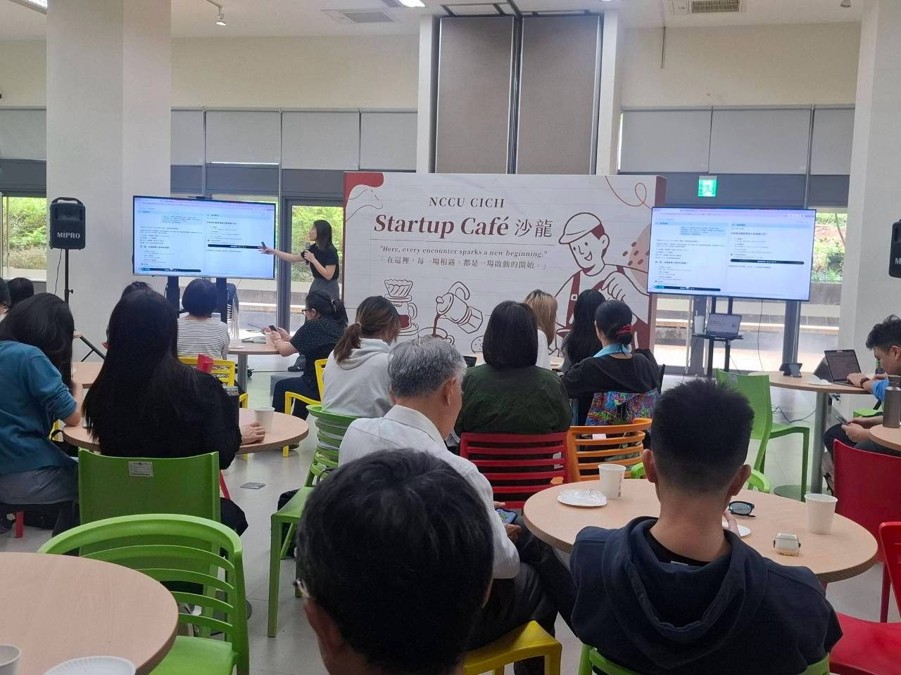
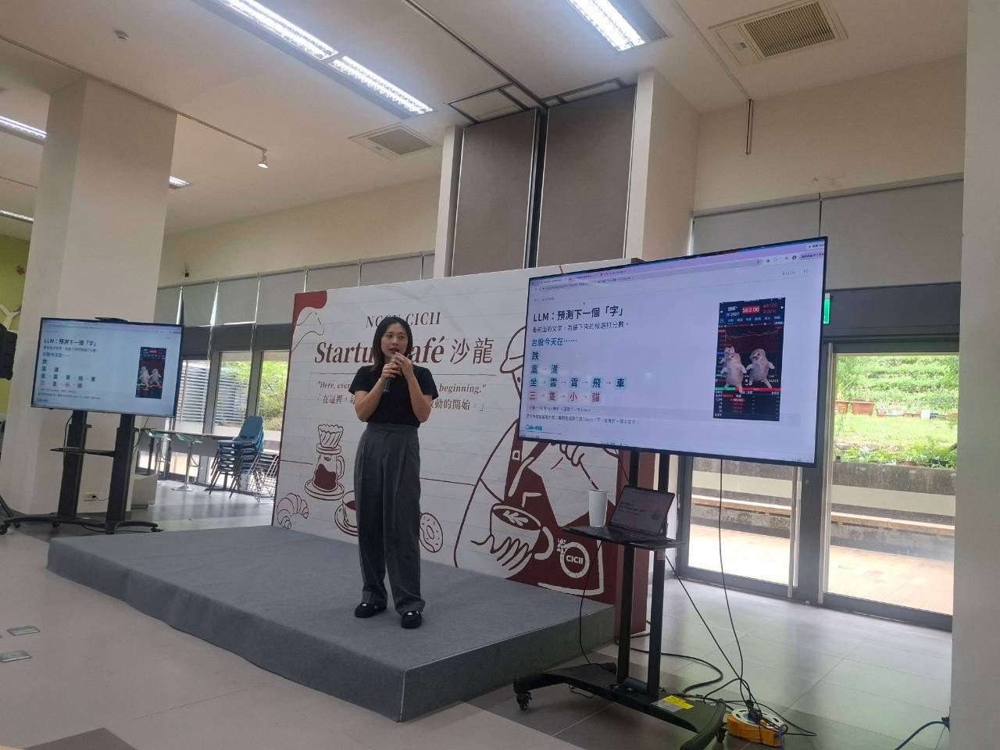
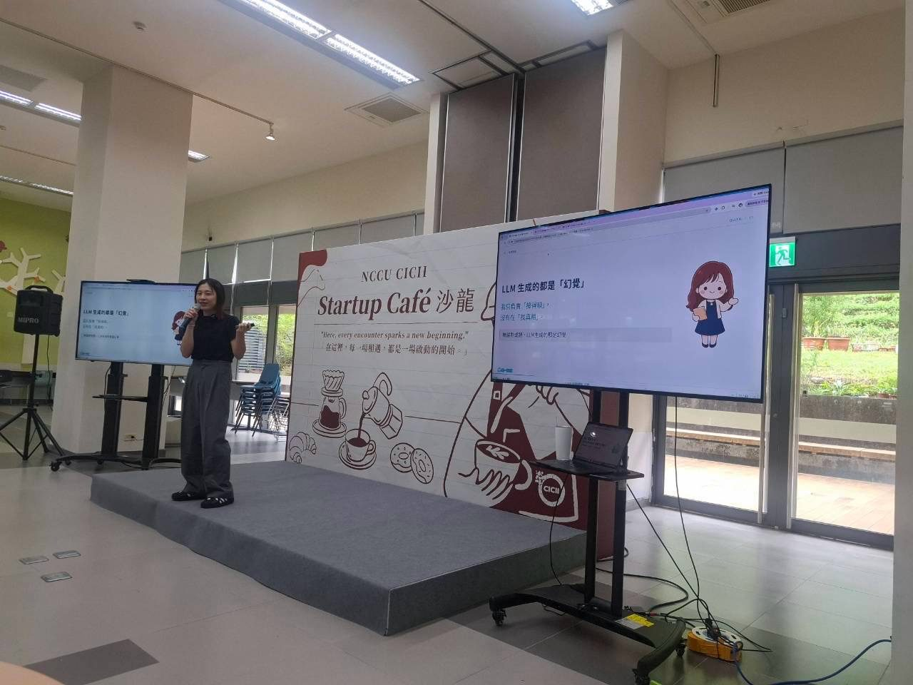
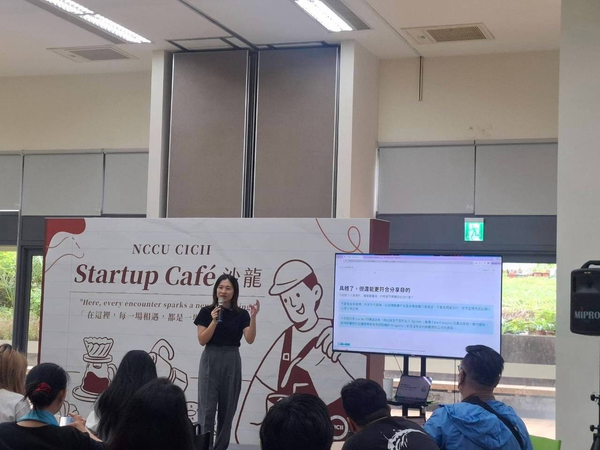
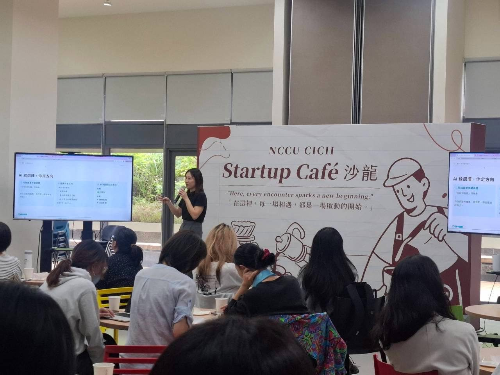

TALK MEMORIES
這次在政大 CICII 的 Startup Café 沙龍，和大家聊 AI 到底在「想」什麼，以及怎麼讓它成為工作上的好幫手。


開場先拆解大型語言模型的原理。它會看前面的文字，替接下來可能出現的字打分數，再一個字一個字接下去。
「台股今天在……」後面要接「跌」、「漲」，還是「三隻小貓」？就看前文給了什麼線索 🐱

既然只是在預測下一個字，它負責的是「看起來像」，而不是「是真的」。
理解這點之後，就知道為什麼 AI 偶爾會一本正經地胡說八道，也知道哪些地方需要我們自己把關。

接著實際示範怎麼一步步修改提示詞：先讓內容變具體，再讓它貼近這次分享真正想達成的目的。
好的提問不是一次到位，而是和 AI 來回對話、慢慢調整出來的。

最後的重點：AI 很擅長攤開各種可能，但要選哪一條路、要說什麼故事，決定權一直在我們手上。
把 AI 當成幫你列選項的夥伴，而不是替你做決定的人 ✨
謝謝 NCCU CICII 的邀請，也謝謝現場每一個認真聽講、拿起手機做筆記的大家。
希望這場分享能讓 AI 變得不那麼神秘，下次見！